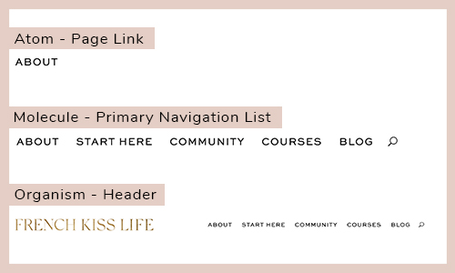

The French Kiss Life Homepage Case Study was the final project for my Web Development class in Fall 2019. I was tasked to find a website I liked and replicate its homepage in the desktop format (we did not focus on responsive design for this project). We first had to break down the website according to Atomic Design principles, create a style guide from these components, create all of the components in a separate webpage, and then finally re-create the site using the components.
The website I chose to replicate is the “French Kiss Life” lifestyle brand by Tonya Leigh. Though some of the Instagram images will have changed, here is the original homepage for reference:
The first task for my project was to use Atomic Design principles to break down the homepage of the website. Atomic Design principle states that individual components of websites, much like when analyzing anything in chemistry, can be broken down into three main components: atoms, molecules, and organisms.
Atoms are the smallest units which cannot be broken down any further without losing their functionality. These atoms would include components such as buttons or labels.
Much like in chemistry, molecules are a group of atoms which work together as a unit to perform a certain function. This, for example, could be a search form which is made up of a label and a button.
Following the pattern, organisms are then made up of a variety of atoms or molecules. This might be a header that includes a search form and a primary navigation list.
To analyze the homepage using Atomic Design methodology, my first task was to take a screenshot of every atom, save their names according to Block Element Modifier (BEM, http://getbem.com/introduction/) naming principles, and add them all to a folder named “Atoms.” I then had to do the same for the molecules on the page and then finally the components, placing them into folders titled “molecules” and “components.”
My next task was to use the atoms, molecules, and organisms to create a style guide. The purpose of this was to provide an overall guide of what, color, imagery, headings, and fonts were used on the website for ourselves to use for the project. It also functioned as practice for us to be able to provide a future web developer for the website a guide to keep website styles consistent.
To create the style guide, I looked at the screenshots of the atom components and organized them by heading hierarchy styles, paragraph styles, icons, buttons, images, logos, colors, and fonts used.
One of the challenges I had with this website was that while the website looked like it followed HTML hierarchy, the website was coded with a template instead of by hand so many of the headers were incorrectly labeled as paragraphs or used the wrong heading number. To add to the confusion, the website was also somewhat unusual in that it had about five different styles each for its h2, h3, and paragraph text instead of just one or two. I had to make the choice on whether to follow the HTML hierarchy used on the website, or follow what I thought was the correct choice. Since I was creating the style guide as if I was going to be handing it over to another professional web developer, I decided to follow the proper guidelines and create my style guide (and later my components) using the correct HTML labels.
After having gathered the atoms, molecules, organism, and creating a style guide, my next task was to replicate every one of them on a component page. I used a combination of reading the CSS of the original website and trial-and-error to duplicate each component to the best of my ability.
https://zoe-blyss.github.io/french-kiss-life-case-study/components/
While the task was generally simple, some of the challenges I faced were not having access to all of the fonts and spacing my components. For the fonts, I searched through Google Fonts and found the best match I could and used those instead. To find the proper formatting, I reviewed flex and grid layouts, and used those to space my atomic and molecule components.
Once I had finished creating all of the organisms on the components page, I had to transfer all of them to the final webpage to re-create the site.
This was in general the easiest part of the project, as when the components were added together they had most of the functions of the original site. There were only two main additions that I had to add to the CSS to make the replicated website flow like the original.
https://zoe-blyss.github.io/french-kiss-life-case-study/
One was that I had some trouble with making both the banner and the header have a sticky position (so it would scroll down with you on the page), but solved this creating a div block around both of them and then setting the div block’s position as sticky. I was then challenged with needing to offset one of the grids and still keeping the sticky banner’s position on top, so I added a z-index of -1 to the grid which took care of the issue.
Email: zoealexande@gmail.com
LinkedIn: www.linkedin.com/in/zoe-blyss-alexander/